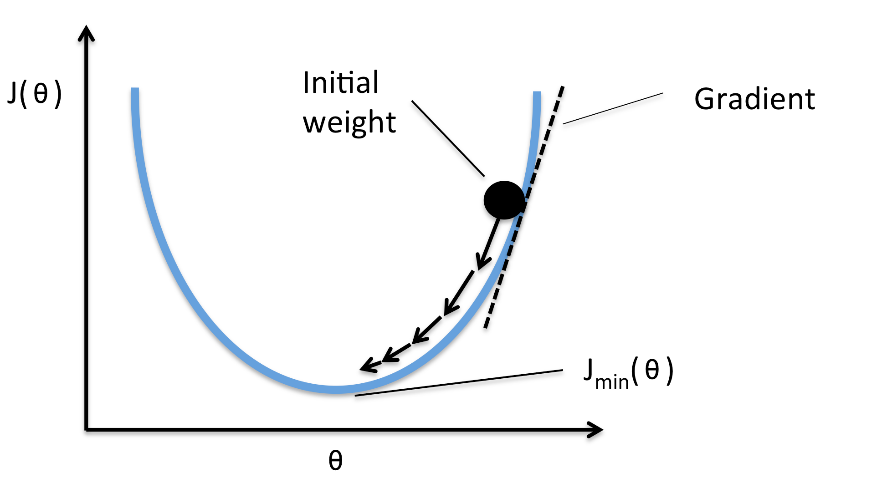

Cost Function
For a set of training examples , with binary labels, the following cost function measures how well a given function h classifies the set. Please note that the function his the same function just described, namely, . Note as well that the summation is across the index of every datapoint and target pair in our set, and so we’re summing across the entire set.
This is known as the cross entropy function, and it is one of many viable functions to use as a cost. Notice that, like any loss function should, this function is zero when the predicted class of every point, is equal to the true labels for each point, . To train our classifier, which is the same as finding the weights that minimize this function, it is common to use gradient descent. Gradient descent can be thought of as a more sophisticated version of guess-and-check, where after each check, we use some mathematical properties to change the weights in an informed way. The idea being to incremental move to better and better weights until our classifier has the accuracy we want.
